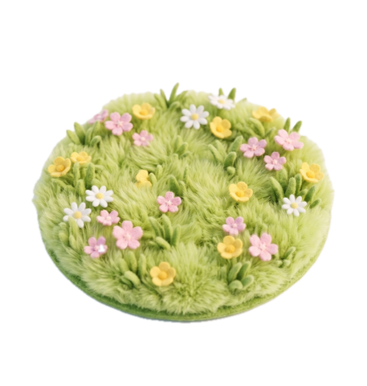
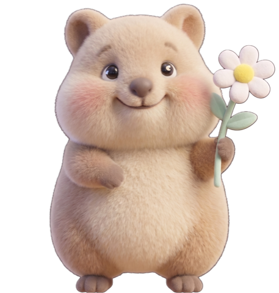
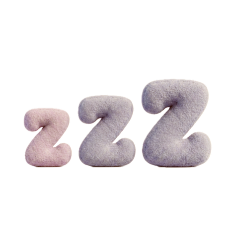

이름 짓기 / 바꾸기
취소
저장
🌼
희희
v0.1
오늘도
희희
는 웃고 있어요!
🎁 만든 이: 최여름
닫기
🌼 희희와 함께 사는 법
🐾 평소
• 클릭 — 데이지 자랑 + 점프
• 드래그 — 자리 옮기기
• 마우스 가까이 — 휘리릭 도망
⚡ 함께 자기
• 충전 꽂으면 풀밭 → 5분 후 잠
• 23시~6시 졸림 (하품 자주)
🎀 메뉴바 ↗ 우상단
• 🌿 풀 주기 / 🌼 이름 짓기
• 🚶 잠깐 외출 (1시간) / 🏠 돌아와 희희
• 📖 사용법 (이 화면)
🌼 항상 웃고 있을 테니, 가끔 나를 봐 — 희희
좋았어!



⚡
🎁 새 버전 있어!
×